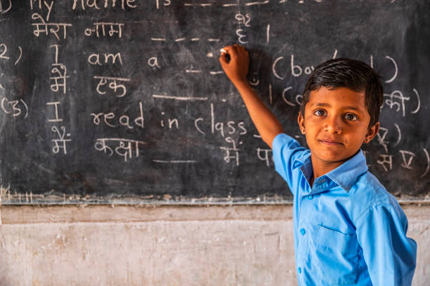

 A school is both the educational institution and building designed to provide learning spaces and learning environments for the teaching of students under the direction of teachers. Most countries have systems of formal education, which is sometimes compulsory.[2] In these systems, students progress through a series of schools that can be built and operated by both government and private organizerzation. The names for these schools vary by country (discussed in the Regional terms section below) but generally include primary school for young children and secondary school for teenagers who have completed primary education. An institution where higher education is taught is commonly called a university college or university. In addition to these core schools, students in a given country may also attend schools before and after primary (elementary in the U.S.) and secondary (middle school in the U.S.) education.[3] Kindergarten or preschool provide some schooling to very young children (typically ages 3–5). University, vocational school, college or seminary may be available after secondary school. A school may be dedicated to one particular field, such as a school of economics
Gallary
There must be something that you love about your school, whether it is the environment, culture, daily life, or even the school uniforms. When talking about your school, the words you use will send a specific message about how you feel, so you will have to choose them carefully. To help you do this, we have generated a list of 26 of the best words to describe the school that anyone can use to talk about his/her school.

The Student and Exchange Visitor Information System (SEVIS) School Information page displays the school’s current information, which is recorded on the school’s Form I-17. The School Information page is the main hub for actions a designated school official (DSO) can take on a school record. It provides easy access to update the school’s record, when needed.